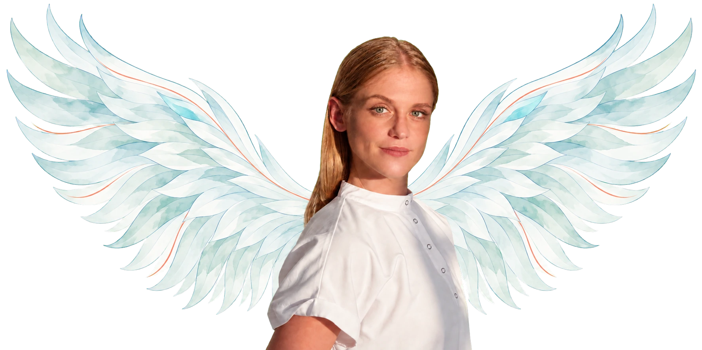
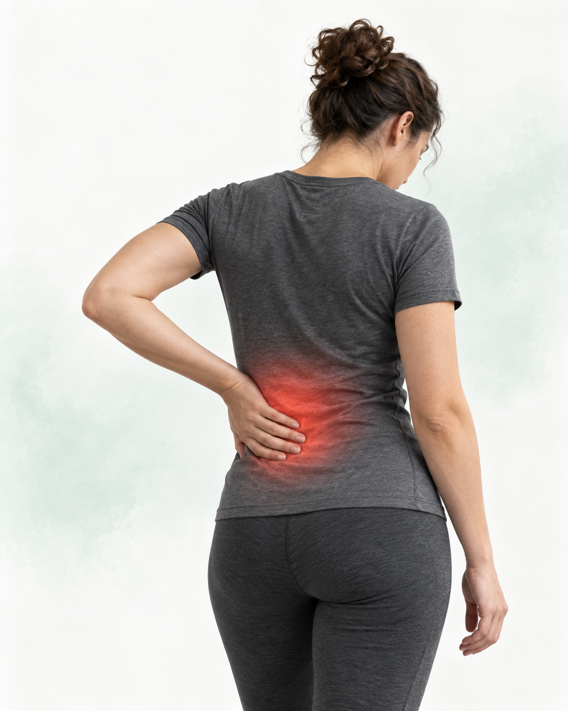
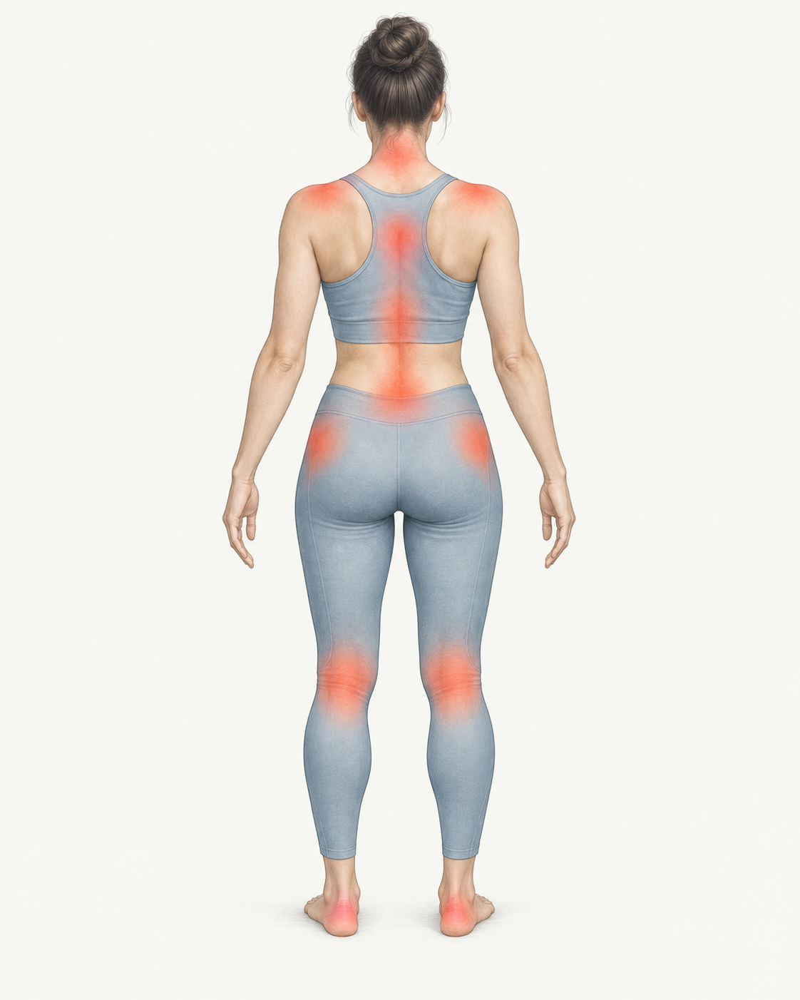
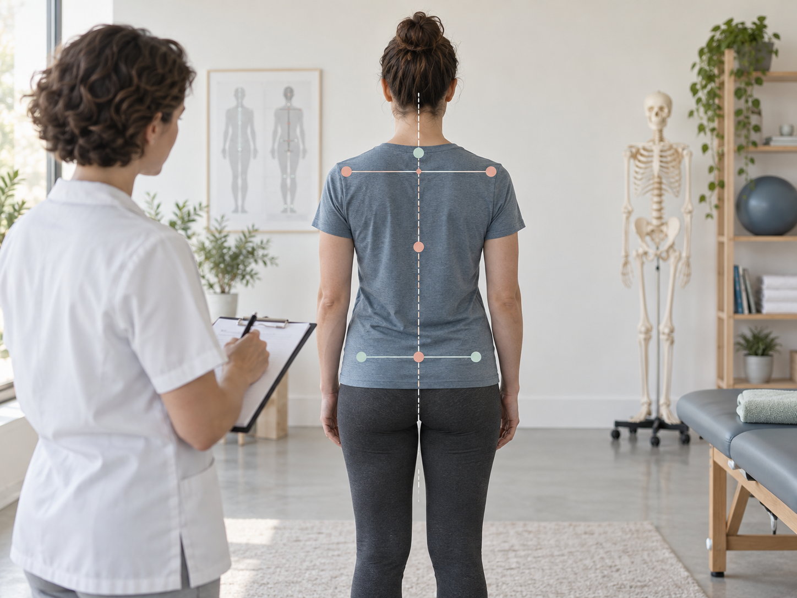
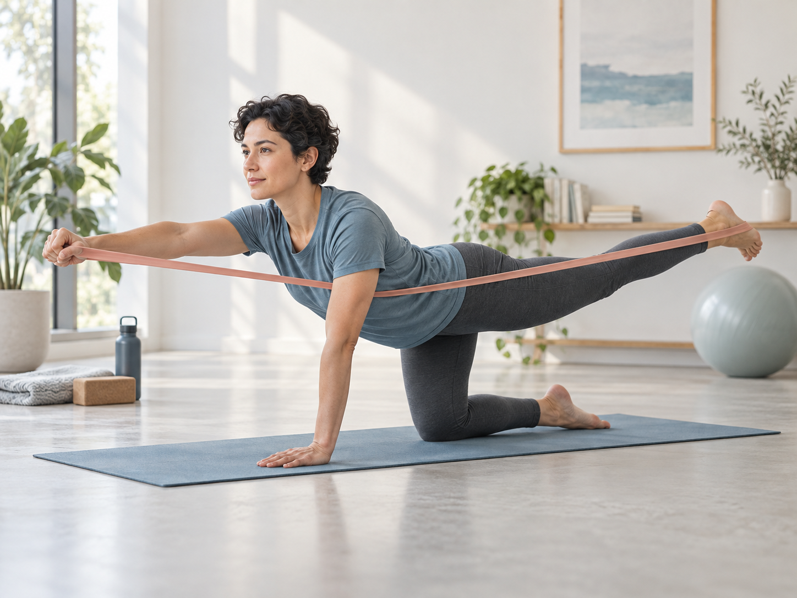
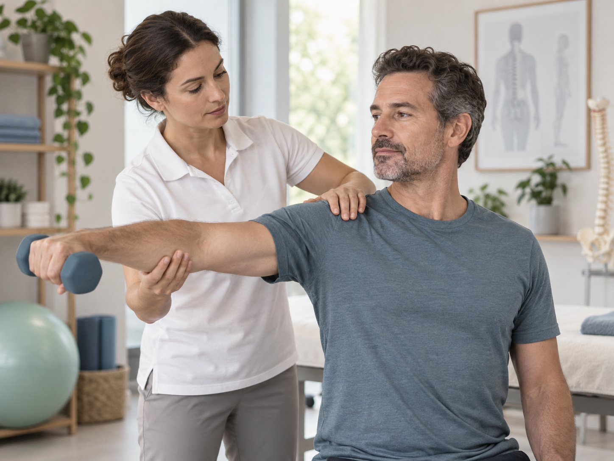
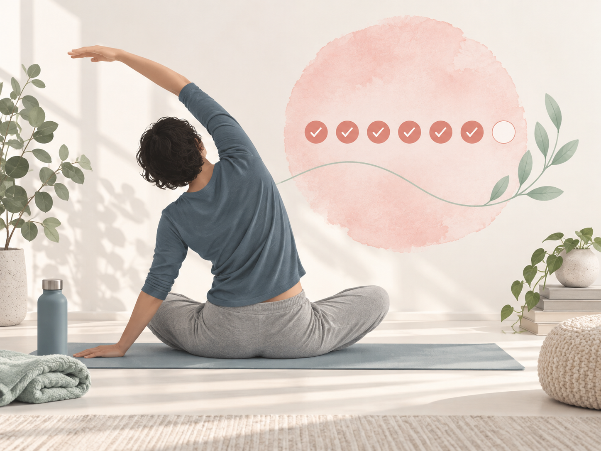
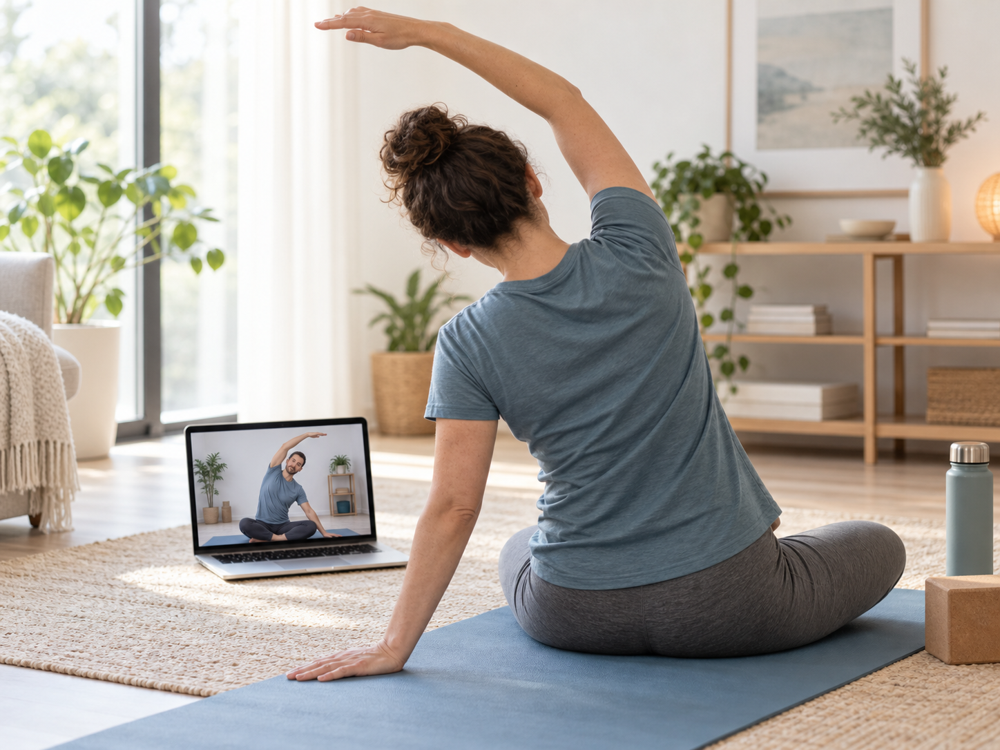
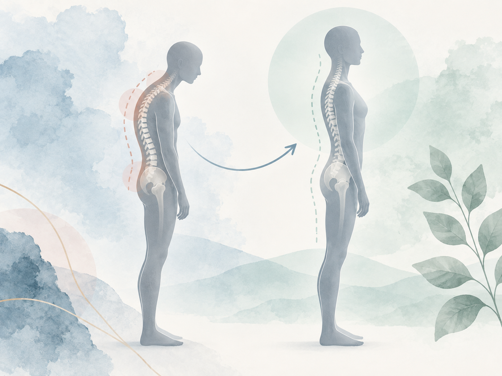

болят спина, поясница, шея или область между лопатками
Курс “Здоровая осанка” – 6 недель, после которых у вас вырастут крылья
Пройти диагностику Чтобы узнать подойдет ли вам курс

Врач-реабилитолог Дарья Кавуненко, которая помогла почти тысяче пациентов избавиться от болей в спине, шее, голове, ногах и суставах и почувствовать себя свободными и полными жизни.
Вам подойдет, если
01
чувствуются скованность, перенапряжение или ограничение движения
есть дискомфорт в тазобедренных или коленных суставах
устают или болят ноги и стопы
хочется работать с сутулостью, асимметрией или выраженным прогибом в пояснице
ходите сгорблено
Пройти диагностику Чтобы узнать подойдет ли вам курс
Для тех, кто не уверен
Делаете упражнения, но не до конца уверены подходят ли они вам, чтобы прийти к результату
Не знаете делаете ли упражнения правильно
Вообще не начинали, потому что боитесь навредить себе и сделать хуже
Собираете упражнения из разных источников, но вам не хватает системы и целостного подхода
Не можете выбрать, чем заниматься сегодня: спиной, шеей, суставами или стопами
Начинаете заниматься, но, как только становится легче, снова перестаёте и так по кругу
Чувствуете, что вам не хватает дисциплины, наставника и доброго внешнего контроля
На курсе «Здоровая осанка» мы будем работать со всем этим: разберём вашу исходную ситуацию, подберём персональные акценты, выстроим последовательную нагрузку и будем следить за техникой и регулярностью занятий.
Плохая осанка может привести к множеству проблем
Осанка — это не только положение спины на фотографии. Это то, как стопы принимают нагрузку, как двигаются колени и тазобедренные суставы, в каком положении находится таз, как работают позвоночник, грудная клетка, плечи и шея.
Если в этой системе нарушается подвижность, сила или координация, тело начинает перераспределять нагрузку. Одни мышцы постоянно перенапрягаются, другие включаются недостаточно. Компенсация может проявляться в разных местах.
Последствиями перенапряжения и плохой осанки могут быть:

- напряжением и болью в шее, плечах или между лопатками;
- дискомфортом в грудном или поясничном отделе;
- скованностью после сна или долгого сидения;
- выраженным прогибом в пояснице, сутулостью или асимметрией;
- дискомфортом в тазобедренных или коленных суставах;
- усталостью, болью или изменением нагрузки на стопы;
- ощущением, что спину тяжело долго держать ровно.
Не каждая боль вызвана осанкой. Но если проблема связана с тем, как тело двигается и распределяет нагрузку, работать только с местом боли часто недостаточно.
Короткий вывод: чтобы изменить осанку, нужно работать со всем телом — от стоп до положения головы.Что будет на курсе?
программа ровно для ваших задач
диагностика в начале и конце
минут упражнений в день
коврик и валик (дадим ссылки на озон)
Программа курса охватывает всё тело и постепенно соединяет отдельные зоны в согласованное движение.
Стопы и ноги
Подвижность и работа стоп, распределение опоры, положение ног, координация коленных и тазобедренных суставов.
Таз и поясница
Положение таза, подвижность пояснично-крестцового отдела, работа ягодичных мышц и мышц корпуса.
Грудной отдел и плечи
Подвижность грудной клетки, положение лопаток и плеч, напряжение между лопатками и в верхней части спины.
Шея и положение головы
Связь шеи с грудным отделом и плечевым поясом, контроль положения головы без постоянного напряжения.
Позвоночник и осанка целиком
Дыхание, координация, симметрия движения и способность сохранять более устойчивое положение тела в обычной жизни.
Мы не пытаемся исправить каждую зону отдельно. Мы учим тело снова работать как единую систему.
Пройти диагностику Чтобы узнать подойдет ли вам курс
Курс не рассчитан на самостоятельную работу при остром состоянии, свежей травме, резком ухудшении самочувствия или симптомах, которые требуют очной медицинской оценки.
Как мы будем работать с вашими проблемами и делать вас здоровее и стройнее?

Диагностика в начале
В начале вы проходите диагностику (отвечаете на вопросы и загружаете фото осанки, если захотите более полный разбор) и наша система подбирает для вас персонализированную программу, основанную на знаниях Дарьи, по которой вы будете заниматься.

Одна основная тренировка в неделю
Всего на курсе — 6 персонализированных под вас тренировок для всего тела (по одной на каждую неделю). Нагрузка постепенно увеличивается: от знакомства с движением и техникой до более уверенной работы на силу, координацию и контроль осанки. Работаем 6 дней, воскресенье – выходной.

Персональный комплекс на 5 минут
Три–четыре упражнения дополняют общую программу и помогают уделить больше внимания тем звеньям цепочки, которые особенно важны в вашем случае.

Поддержка регулярности
Каждый день участники отмечают выполнение упражнений. Короткий отчёт помогает не выпадать из процесса, когда стало легче или появились другие дела. В течение недели Дарья записывает короткие видео-комментарии: объясняет важные детали техники и напоминает, почему конкретный этап нужен для результата.

Три эфира с разбором техники
Раз в две недели проходит часовой эфир с ответами на вопросы и разбором выполнения упражнений, чтобы вы делали ровно то, что подходит вашему телу.

Финальная диагностика
Фиксируем результат через анкету и фотографии (не обязательно) и замечаем крылья за спиной.
Результат
Какого результата можно ожидать
Результат зависит от исходного состояния и запроса. Для одного человека главным изменением станет уменьшение напряжения после рабочего дня. Для другого — более свободное движение в пояснице, суставах или стопах. Для третьего — заметное изменение положения плеч, таза или головы.
К концу курса вы сможете:
- сравнить осанку на стартовых и итоговых фотографиях;
- оценить изменения боли, скованности и переносимости нагрузки;
- увидеть, как изменились подвижность и контроль тела;
- понять связь между стопами, суставами, тазом, позвоночником и шеей;
- выполнять упражнения точнее и увереннее;
- знать, какие упражнения нужны именно вам;
- получить план дальнейшей работы после курса (на тарифе VIP)
Мы не обещаем, что за 6 недель исчезнет любая боль или полностью исправится осанка. На динамику влияют исходное состояние, регулярность занятий и индивидуальные ограничения. Задача курса — найти связанные с осанкой проблемы, начать их корректировать и дать вам систему для продолжения работы.
Результаты Дашиных учеников за честные 6 недель занятий:
допосле
допосле
допосле
допосле
допосле
Тарифы
01
С куратором
Для тех, кому нужна последовательная программа, понятный ритм и регулярная обратная связь.
В тариф входит:
- стартовая оценка осанки по анкете
- 6 тренировок с постепенным усложнением
- короткий персональный комплекс
- чат с куратором в Telegram или MAX
- 3 прямых эфира по часу — один эфир каждые две недели
- ответы на вопросы и разбор техники на эфирах.
16 900 ₽— для первых 5 человек
Выбрать тариф с куратором Затем — 19 900 ₽
02
С Дарьей
Для тех, кому важны персональные комментарии врача и корректировка работы по ходу курса.
Всё, что входит в тариф «С куратором», а также:
- личный комментарий Дарьи по диагностике + диагностика по фото (если захотите)
- обсуждение реалистичных целей и ожидаемой динамики
- возможность задавать Дарье вопросы в личке
- корректировка упражнений в процессе, если это необходимо
- повторная оценка результата Дарьей в конце курса
- персональные рекомендации для дальнейших занятий
30 000 ₽— для первых 5 участников
Выбрать сопровождение Дарьи Затем — 34 900 ₽
Частые вопросы
Осанка действительно может влиять на стопы и суставы?+
Тело передаёт нагрузку по всей двигательной цепочке. Положение стоп и ног влияет на работу таза и позвоночника. Изменения положения таза и корпуса, в свою очередь, могут менять походку и нагрузку на тазобедренные, коленные суставы и стопы. Именно поэтому на курсе мы оцениваем и тренируем всё тело.
Значит ли это, что любая боль связана с осанкой?+
Нет. У боли могут быть разные причины. Стартовая анкета нужна в том числе для того, чтобы понять, соответствует ли ваш запрос задачам курса и не требуется ли сначала очная консультация.
Подойдёт ли курс при грыже, протрузии или сколиозе?+
Само название диагноза не определяет программу. Важно учитывать симптомы, ограничения, текущее состояние и рекомендации лечащего врача. Перед стартом вы заполните анкету. Если онлайн-формат или предложенная нагрузка вам не подходят, мы сообщим об этом.
Я постоянно начинаю и бросаю. Есть смысл идти?+
Да, если вам помогает внешний ритм. В курсе есть постепенная программа, ежедневные короткие отчёты и поддержка. Не нужно резко менять всю жизнь. Нужно регулярно выполнять следующий шаг.
У меня мало времени. Смогу ли я заниматься?+
Основная тренировка открывается раз в неделю и занимает около 10-15 минут, а персональный комплекс занимает примерно 5 минут. Заниматься можно в любое время.
Что понадобится для занятий?+
Коврик, резинка и валик. Ссылки и рекомендации по выбору будут доступны во вводном блоке.
Почему недостаточно просто выпрямить спину?
Попытка постоянно отводить плечи назад и контролировать себя усилием воли не формирует здоровую осанку.
Поэтому на курсе мы работаем сразу с четырьмя составляющими:
Подвижность
Возвращаем движение тем отделам позвоночника и суставам, которые двигаются недостаточно.
Сила
Укрепляем мышцы корпуса, спины, таза и ног, которые помогают поддерживать тело в движении и в повседневных положениях.
Координация
Учимся распределять нагрузку между отделами тела, а не перегружать постоянно одну и ту же зону.
Дыхание
Работаем с движением грудной клетки и дыхательными паттернами, которые связаны с положением корпуса и контролем осанки.
Здоровая осанка
Получите диагностику, системный подход к телу, понятную и простую программу специально для вас и поддержку в течение 6 недель.
Пройти диагностику И узнать будет ли вам полезен курс
Курс «Здоровая осанка» с Дарьей Кавуненко